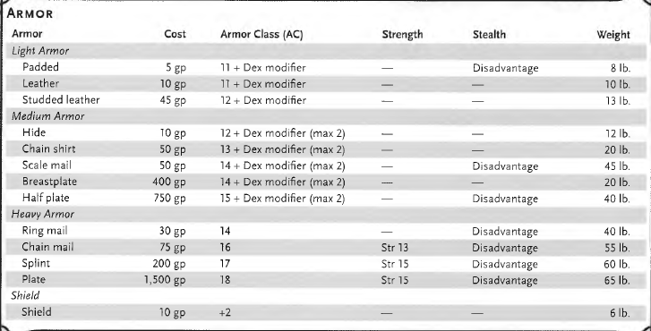

S t a r t i n g W e a l t h b y C l a s s
Barbarian - 2d4 x 10 gp
Bard - 5d4 x 10 gp
Cleric - 5d4 x 10 gp
Druid - 2d4 x 10 gp
Fighter - 5d4 x 10 gp
Monk - 5d4 gp
Paladin - 5d4 x 10 gp
Ranger - 5d4 x 10 gp
Rogue - 4d4 x 10 gp
Sorcerer - 3d4 x 10 gp
Warlock - 4d4 x 10 gp
Wizard - 4d4 x 10 gp
S t a n d a r d E x c h a n g e R a t e:
Coin.................cp.............sp...........ep............gp..............pp
Copper(cp)........1............1/10.......1/50.......1/100........1/1,000
Silver(sp)..........10.............1...........1/5.........1/10...........1/100
Electrum(ep)......50...........5............1..........1/2.............1/20
Gold(gp)..........100...........10...........2..........1..............1/10
Platinum(pp).....1,000........100........20.........10.............1
Armors:

Weapons
Every weapon is classified as either melee (attack targets within 5 feet) or ranged (attack targets at a distance). Weapons also fall into two proficiency categories: Simple and Martial.
Simple Weapons - Common weapons found in the hands of ordinary folk. Most classes are proficient with these.
Martial Weapons - Swords, axes, polearms, and other weapons that require more specialized training. Most warriors use these to put their fighting style and training to best use.
Proficiency with a weapon lets you add your proficiency bonus to attack rolls. Without proficiency, you do not add it.
— W E A P O N P R O P E R T I E S —
Ammunition - Can only make ranged attacks if you have ammunition. Each attack expends one piece. You can recover half your expended ammunition after battle by spending a minute searching. Using an ammunition weapon as a melee weapon treats it as an improvised weapon.
Finesse - Use either your Strength or Dexterity modifier for attack and damage rolls. Must use the same modifier for both.
Heavy - Small creatures have disadvantage on attack rolls with heavy weapons — the size and bulk are too large for them to use effectively.
Light - Small and easy to handle. Ideal for two-weapon fighting.
Loading - You can fire only one piece of ammunition when you use an action, bonus action, or reaction to fire it, regardless of how many attacks you can normally make.
Range - Lists two numbers: normal range / long range (in feet). Attacking beyond normal range gives disadvantage. You can't attack beyond long range at all.
Reach - Adds 5 feet to your reach when you attack with it (and for opportunity attacks).
Thrown - Throw the weapon to make a ranged attack. Use the same ability modifier you would use for a melee attack with it (e.g. Strength for a handaxe, Strength or Dexterity for a dagger since it has Finesse).
Two-Handed - Requires two hands to use.
Versatile - Can be used with one or two hands. The damage value in parentheses is the damage when wielded with two hands.
— S P E C I A L W E A P O N S —
Lance - You have disadvantage when attacking a target within 5 feet of you. Requires two hands to wield when not mounted.
Net - A Large or smaller creature hit by a net is restrained until freed. Has no effect on formless creatures or those that are Huge or larger. A creature can use its action to make a DC 10 Strength check to free itself or another creature within reach. Dealing 5 slashing damage to the net (AC 10) also frees the creature and destroys the net. When you attack with a net using an action, bonus action, or reaction, you can make only one attack regardless of your normal number of attacks.
— O T H E R W E A P O N R U L E S —
Improvised Weapons - Any object you can wield in one or two hands (broken glass, a table leg, a frying pan). If it resembles a real weapon, the DM may treat it as such. Otherwise it deals 1d4 damage of an appropriate type. An improvised thrown weapon has a normal range of 20 feet and a long range of 60 feet.
Silvered Weapons - Some monsters resistant or immune to nonmagical weapons are susceptible to silver. You can silver a single weapon or ten pieces of ammunition for 100 gp.


For tools go Here
For Adventure gears and packs go To this site.